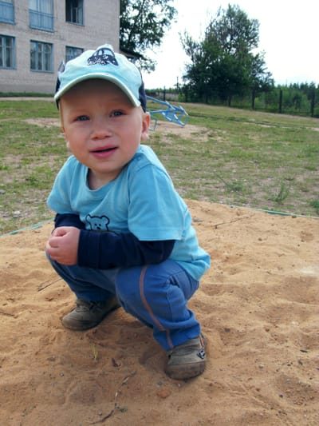

Bike
Нашел сегодня прикольный сайт с инфой об устройстве велосипеда.
Нашел сегодня прикольный сайт с инфой об устройстве велосипеда.
Леха расшарил статью (спасибо, Леха!), а я пока ехал в электричке купил (киндл, киндл!) и успел даже процентов 15 прочитать.
Про хеппинесс, например, пишут, что несмотря на то, что 50% ощущения счастья заложено в нас генетически, еще 10% зависит от различных факторов вроде того, какое у вас образование, сколько вы зарабатываете, находитесь ли вы в отношениях и тп, оставшиеся 40% — это то, что в наших руках и на что мы можем напрямую влиять.
Пишут, что делиться с кем-то своими проблемами, в общем, малоэффективно и почти не оказывает влияния на эмоциональное состояние (ровно так же как и "думать" о проблеме про себя). Гораздо эффективнее завести дневник и описывать в нем свои ощущения от произошедшего (или происходящего). Все дело в том, что записывая свои ощущения, мы более последовательно выстраиваем свои мысли, что помогает нам лучше понять случившиеся, сделать правильные выводы и найти верное решение.
Вообще, вести дневник полезно не только для того, чтобы лучше понять и решить какую-то проблему, но и для того, чтобы напоминать себе о том приятном, что происходит в нашей жизни. Так, исследование показало, те, кто тратит несколько минут в день на то, чтобы еще раз вспомнить и записать кайфовые моменты, чувствуют себя гораздо лучше и счастливее.
Еще пишут (и в каждом случае приводят результаты исследований), что несмотря на то, что покупки повышают ваше ощущение счастья, лучше тратить деньги не на вещи, а на нечто нематериальное, например, на поездки, какой-то новый опыт (прыгнуть с парашютом, покататься на лошади и тп), потому что ощущение счастья в таком случае будет сохраняться гораздо дольше, чем в случае, если вы купите какой-то, пускай и самый крутой гаджет (к которому быстро привыкаешь и который уже очень скоро перестает торкать).
Чувак пишет очень много всего клевого, так что непременно почитайте — отличная книжка!
We don't see things as they are, we see things as we are.
Anais Nin.
Какой-то охуенный чувак написал омнибокс для сафари :)

Мелкий оулит :)
Отличный сериал, в котором [пока] всего два сезона, и второй сезон даже круче первого :)
А вы знаете, что мультитач во Льве сильно круче, чем на айфоне? :)
Очень приятный амбиент.
Чтобы в инбоксе показывались треды, как в гуглопочте (+отправленные), то надо чекнуть галку в Settings | Viewing | Include related messages.
Для пользователей гуглопочты надо перемапить Sent, Trash и Drafts ящики иначе Мейл создаст вам своих (выделить нужную папку под гуглом и в меню Mailbox | Use this mailbox for | Sent или Trash или Drafts, соответственно).
Чтобы иметь возможность отправлять почту с разных адресов, надо эти адреса вбить через запятую в поле адреса в настройках аккаунта.
Еще удобно перетащить нужные папки в Favorites bar (и переключаться потом Command + 1, 2, 3, etc) и спрятать папки вообще нафиг :)
У гугла есть пару хинтов по настройке почты на маке.
Luther s02 e02